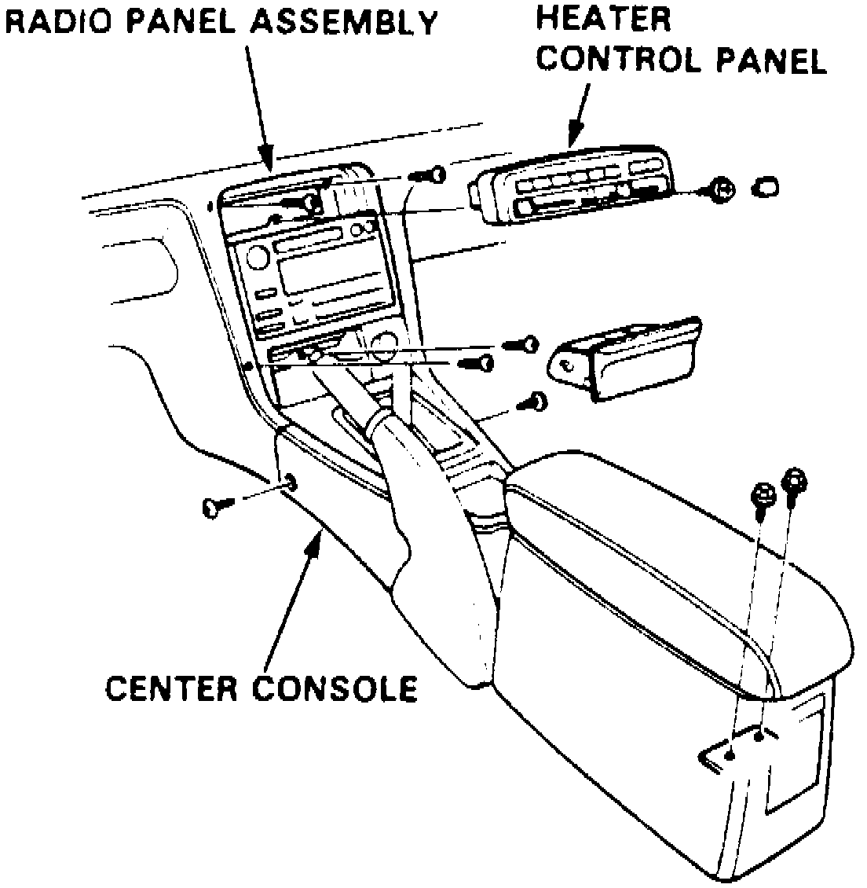
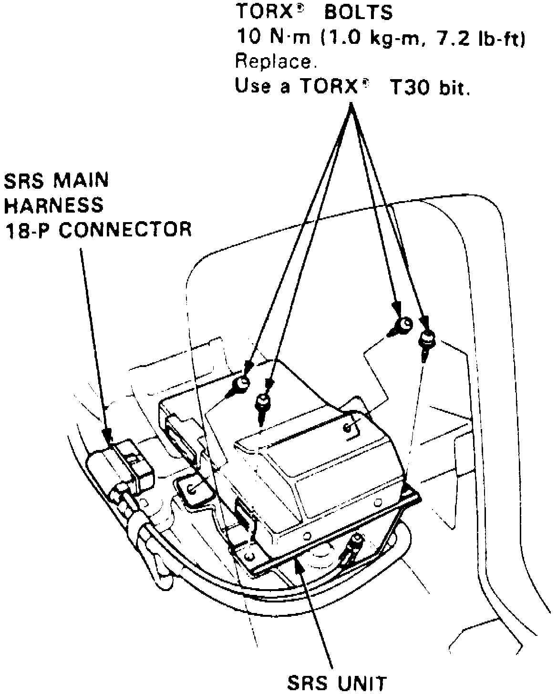

Air Bag Control Module: Service and Repair
REMOVALG1. On models equipped with radio coded theft protection system, refer to Vehicle Damage Warnings for system disarming and arming procedures. On models equipped with airbag system, refer to Technician Safety Information for system disarming and arming procedures.
Fig. 28 Center Console Replacement:

2. Remove center console assembly, Fig. 28.
3. Remove heater control panel, then remove radio panel assembly.
Fig. 29 SRS Unit Installation:

4. Disconnect 18 pin (18-P) electrical connector from SRS unit, Fig. 29.
5. Remove 4 SRS unit attaching bolts, then remove SRS unit through dash board opening. Store SRS unit in a dry clean area.
INSTALLATION
1. Ensure battery cables are disconnected and red short connectors are connected to air bag electrical connectors.
2. Install SRS unit to mounting bracket, Fig. 29. Tighten attaching bolts to specifications.
3. Connect 18 pin (18-P) electrical connector to SRS unit. Push electrical connector into SRS unit until it clicks. Ensure SRS wiring harness is properly routed.
4. Install radio panel assembly and heater control panel, Fig. 29.
5. Install console assembly, Fig. 29.